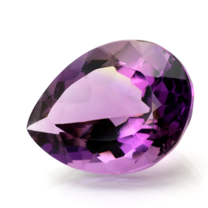

Amethyst: The Quintessential Purple Gem
Introduction to Amethyst
Amethyst is a remarkable gemstone, renowned for its captivating purple hue and a rich history that spans centuries. This crystal, a variety of quartz, has been treasured across different cultures and civilizations, not only for its beauty but also for its supposed mystical powers. The color of amethyst ranges from delicate, pale lavender to deep, intense violet, depending on the amount of iron and trace elements present in the crystal lattice. This variation in color makes amethyst one of the most sought-after gemstones by collectors, jewelers, and crystal enthusiasts.
Amethyst is widely used in various forms, from raw crystal clusters to finely cut gemstones set in intricate jewelry designs. Its affordability, compared to other precious stones, coupled with its stunning appearance, has made amethyst a popular choice for both ornamental and metaphysical purposes. Whether worn as a statement piece or kept as part of a crystal collection, amethyst continues to mesmerize with its rich color and clarity.
Beyond its aesthetic appeal, amethyst is also believed to possess a variety of spiritual and healing properties. Many people use amethyst in meditation practices, while others believe it can provide protection and bring about a sense of peace and calm.
If you're interested in finding amethyst in its natural habitat, be sure to check out our Amethyst Gem Mining Maps. These maps highlight prime locations where you can go rockhounding for this beautiful and enigmatic crystal!
How Amethyst Forms
Amethyst forms through a fascinating geological process that occurs deep within the Earth's crust. It primarily develops in geodes, which are spherical cavities within volcanic rocks, as well as in hydrothermal veins where mineral-rich fluids flow through cracks in the Earth's surface. The process begins when silica-rich fluids, often combined with trace amounts of iron and other elements, seep into these cavities or veins. Over millions of years, as these fluids cool and slowly crystallize, quartz begins to form.
The presence of iron within the silica solution plays a crucial role in giving amethyst its characteristic purple color. This color can range from pale lavender to deep violet, depending on the concentration of iron and the natural irradiation the crystal has undergone. The unique conditions under which amethyst forms, including the temperature and pressure, influence not only its color but also the size and shape of the crystals.
Amethyst crystals often grow in clusters, with their pointed ends extending toward the center of the geode or cavity. These clusters can vary significantly in size, from small drusy crystals that cover a rock surface like sparkling sugar to large, cathedral-like geodes that can stand several feet tall. The longer the crystals have to form, the larger and more defined they become. It is this slow, natural process that gives amethyst its stunning clarity and depth of color.
If you're eager to discover amethyst in its natural environment, don't miss our Amethyst Gem Mining Maps. These resources will guide you to some of the best rockhounding spots for finding amethyst in the wild.
Amethyst's Structure and Properties
Amethyst is a type of quartz, with the chemical formula SiO2, meaning it is composed of silicon dioxide. The distinctive purple color of amethyst is due to the presence of iron impurities within the crystal lattice, combined with natural irradiation that the stone undergoes during its formation. This combination of factors leads to a range of purple hues, making each piece of amethyst unique.
Amethyst belongs to the trigonal crystal system, one of the seven crystal systems in mineralogy. Crystals in this system typically form as six-sided prisms, although the exact shape can vary depending on the environmental conditions during their formation. The symmetry and geometry of these crystals contribute to amethyst's ability to refract light, giving it a brilliant sparkle when polished.
With a hardness of 7 on the Mohs scale, amethyst is a durable gemstone, making it suitable for a wide range of applications, from jewelry to decorative pieces. Its relative hardness ensures that it can withstand daily wear and tear, although it is still important to protect amethyst from scratches and harsh impacts to maintain its natural beauty.
In addition to its aesthetic qualities, amethyst exhibits piezoelectric properties. This means that when subjected to mechanical stress, it can generate an electric charge, a characteristic that has made quartz, including amethyst, valuable in various technological applications. These properties are harnessed in devices such as watches, pressure gauges, and electronic circuits.
Uses of Amethyst
Throughout history, amethyst has been utilized for a multitude of purposes, from ornamental and decorative items to functional tools in various industries. In the world of jewelry, amethyst is celebrated for its vibrant purple color and versatility. It is commonly used in rings, necklaces, earrings, and bracelets, where its deep hues can be paired with different metals and other gemstones to create striking pieces. Amethyst is also popular in statement jewelry, where larger stones are set to highlight their natural beauty.
Beyond its use in personal adornment, amethyst has found a place in home décor. Polished amethyst geodes and clusters are often displayed as decorative objects, bringing a touch of natural beauty into homes and offices. Amethyst bookends, sculptures, and even furniture inlays are sought after by those who appreciate the natural elegance of this crystal.
In the industrial sector, amethyst's hardness and durability make it an excellent abrasive. It is used in the production of sandpaper and other grinding tools, where its ability to withstand wear and tear is highly valued. Additionally, due to its piezoelectric properties, amethyst is employed in the manufacturing of precision instruments and electronic devices, including watches and sensors.
While amethyst's primary appeal lies in its aesthetic qualities, its functional properties have made it a valuable resource in both art and industry, demonstrating the versatility of this remarkable gemstone.
Amethyst in History
Amethyst's rich and storied history is deeply intertwined with various cultural beliefs and practices. The name "amethyst" is derived from the Greek word "amethystos," meaning "not intoxicated." According to ancient Greek mythology, the stone was believed to prevent drunkenness and was often associated with Dionysus, the god of wine. To this day, amethyst is sometimes referred to as the "sobriety stone," a nod to its legendary power to ward off the effects of alcohol.
Amethyst's connection to royalty and religion is also well-documented. In ancient Egypt, amethyst was used as a protective amulet, believed to ward off negative energies and bring good fortune. During the Middle Ages, the stone was considered a symbol of royalty and was frequently used in crowns, scepters, and other regal ornaments. The deep purple color of amethyst was associated with nobility, and it was often worn by kings, queens, and high-ranking clergy members.
Amethyst has also played a significant role in religious contexts. It is mentioned in the Bible as one of the twelve stones in the breastplate of the High Priest of Israel, symbolizing the tribe of Dan. In Christian symbolism, amethyst was associated with piety and spirituality, leading to its widespread use in ecclesiastical rings and crosses, particularly by bishops and other members of the clergy.
Throughout history, amethyst has been revered not only for its physical beauty but also for its purported mystical powers. It has been used in amulets and talismans for protection, healing, and spiritual guidance, and its legacy continues to influence modern practices and beliefs.
Metaphysical Properties of Amethyst
Some people claim that amethyst possesses a wide range of metaphysical properties, making it a popular choice among those who practice crystal healing and spiritual work. One of the most commonly attributed properties of amethyst is its ability to calm the mind and promote mental clarity. It is often used in meditation practices, where it is believed to help quiet the thoughts, enhance focus, and deepen the meditative state.
Amethyst is also thought to enhance intuition and spiritual awareness, making it a favored stone among those who seek to connect with higher realms of consciousness. Some practitioners use amethyst to facilitate communication with spiritual guides or to gain insight during moments of introspection.
Additionally, amethyst is believed to have protective qualities. It is said to shield its wearer from negative energy, psychic attacks, and environmental stressors. This protective attribute is often invoked in crystal grids and other arrangements designed to create a safe and harmonious space.
Emotionally, amethyst is claimed to promote balance and healing. It is thought to help alleviate stress, anxiety, and grief, providing a sense of calm and emotional stability. This makes it a popular stone for those seeking to achieve emotional well-being and inner peace.
While these claims about amethyst's metaphysical properties are not supported by scientific evidence, they continue to be a significant part of the lore and appeal surrounding this beautiful crystal. Whether or not one subscribes to these beliefs, there is no denying the enduring popularity and mystique of amethyst in both historical and contemporary contexts.